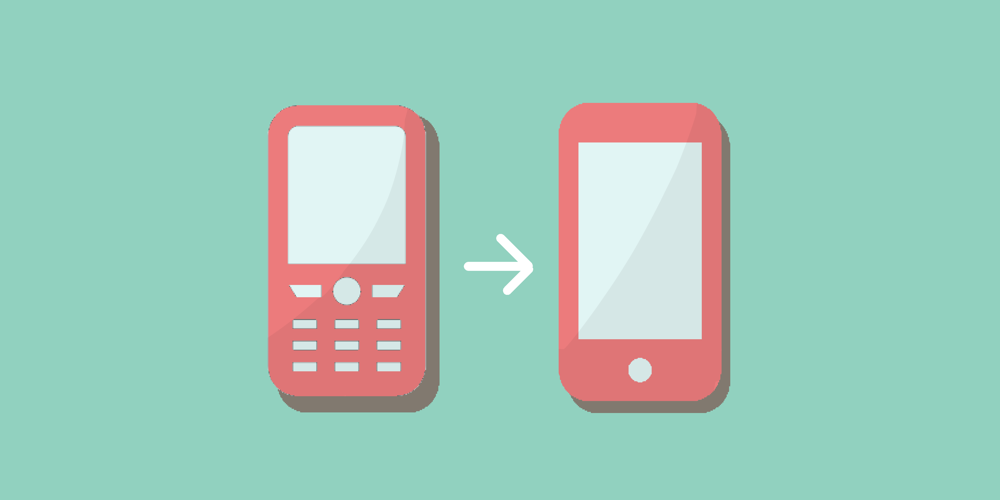
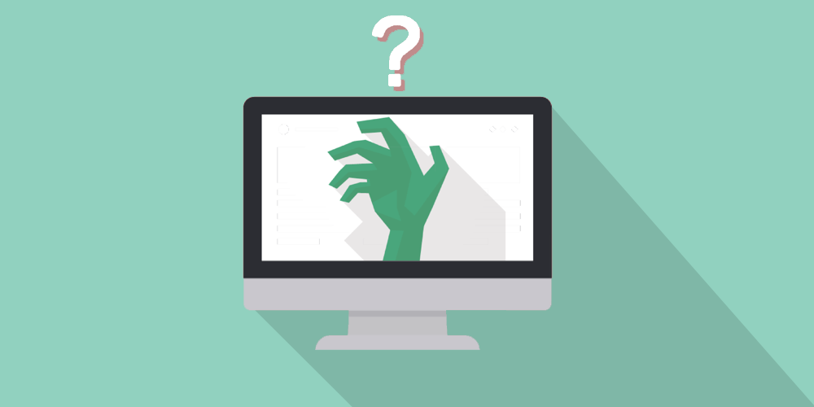

1
無意識に携帯を開いて、無意味に画面を眺める。
それはスマホだけではなく、ガラケーの時でもそうだった。
どちらかというと私はガラケーの方が「ネットに接続している」感覚があった。
メールは指で受信ボタンを押して受け取ったり、Twitterを更新する場合も更新ボタンを押す。

スマホになってからはメインのツールはメールからLINEに変わり、受信ボタンは消え、ネットに繋いでいればメッセージは自動的に通知として来るし、Twitterは更新ボタンを押さなくてもリアルタイムで更新される。
だから、ネットに接続しているという感覚が5年前程に比べて薄れているのだ。
2
ネットの依存性とストレス
今回、オフラインの生活を経験して、一番違いが出たのが通学時間だった。
普段は動画を見て過ごすのだが、結構あっという間で満員電車もそこまで辛くはない。
ただ、30分の通学時間、機内モードにしてオフラインにしてみると車窓を眺めることしかできなかった。周りの人のため息、隣の人の音漏れの音など普段なら気にしないことも気になり、ストレスを感じた。
そして、1番違いを感じたのは乗車時間がいつもの何倍にも感じた。いつもより遥かに時間の進みが遅く感じるのだ。
実際、研究によると「ストレスを感じたときに時間が普段よりも長く感じたりするのは、ストレスにより脳内に分泌されるアドレナリンなどの化学物質が、神経細胞の働きに影響を与えるからである」という結果が出ている。（出典元:Scientists discover how to make time pass faster (or slower) - Mail Online 11/5)
繋がったままの生活を過ごしている人にとって、オフラインの時間はストレスを感じるのだ。
3
ネットは本当に必要？
1日目は自分が1番ネットを利用する、21~23時にオフラインにすることにした。
携帯は機内モードにして、PCはwi-fiを切ることにした。私が主にオンラインを用いて使用するデバイスはこの2つだ。
そのままペンタブを繋いで絵を描くことにした。

私は音楽がないと作業できないのでいつもはyoutubeやniconicoから再生しているが、今回はオフライン状態なのでitunesでダウンロードしておいた曲を聴きながら作業をはじめた。
絵を描く分にはオフライン状態でも問題なく、1時間、2時間と時間が過ぎていった。
案外ネットがなくてもいける、そう思った。
しかし、「これを持っている時の手の向きってどうだっけ」など、わからなくなった時に調べることができないのはやはり不便だった。
4
世界の蚊帳の外
私は舞台観劇が趣味なのでよく劇場に足を運ぶ。このオフラインを経験する期間も1日だけ観劇する日があった。
幕が開き、照明がキラキラと光る。その光に負けないくらいキラキラした演者を見ると、思わず息を飲む。今ではリアルタイムで配信などが行われており、何処にいたって観劇することは可能である。しかし、やはり生で見るのは何百倍も感動が違う。
その時は勿論スマホの電源をシャットダウンしている。同時にネットからも遮断される。
この約2、3時間は完全に世界の蚊帳の外のような感覚だ。
実際私が生活をしていて、自分の意思でネットから離れるのはこの時のみだ。
寝ている時もアラームをセットしているから電源を落としていないし、電源を落とさないということはネットは繋がったまま。
わざわざ機内モードにして寝たりはしないし、結局ずっとネットと接続したままの生活だ。
5
ネットの依存性とストレス
今回、オフラインの生活を経験して、一番違いが出たのが通学時間だった。
普段は動画を見て過ごすのだが、結構あっという間で満員電車もそこまで辛くはない。
ただ、30分の通学時間、機内モードにしてオフラインにしてみると車窓を眺めることしかできなかった。周りの人のため息、隣の人の音漏れの音など普段なら気にしないことも気になり、ストレスを感じた。
そして、1番違いを感じたのは乗車時間がいつもの何倍にも感じた。いつもより遥かに時間の進みが遅く感じるのだ。
実際、研究によると「ストレスを感じたときに時間が普段よりも長く感じたりするのは、ストレスにより脳内に分泌されるアドレナリンなどの化学物質が、神経細胞の働きに影響を与えるからである」という結果が出ている。（出典元:Scientists discover how to make time pass faster (or slower) - Mail Online 11/5)
繋がったままの生活を過ごしている人にとって、オフラインの時間はストレスを感じるのだ。
6
最後に...
ネットは、呼吸をするかのようにいつでも接続されていて切っても切り離せない存在。
スマホでもPCでもネットに1番接続して利用しているのはSNS。
Twitter、Instagram、LINE...様々があるが、たまに「疲れた」と思うことがある。
返事を返すのも、載せる写真を加工するのも疲れる。SNS疲れというものだ。最初は楽しかったはずなのに。
この先、ネットはどのように進化して行くのだろう。人工知能が社会を支配して、超監視社会になってしまうのだろうか。
先のことは誰にもわからないが、オンラインでの生活の仕方をもう少し見直そうと思った。
オフラインを終えてネットに繋いでみると、最後にオンラインだった時にはなかった情報が五万と溢れている。
その時は少し、世界から仲間外れにされたような気分になるのだ。
ネットが全てではないが、現代を生きる私たちにとってネットは酸素と同じようなものだろう。